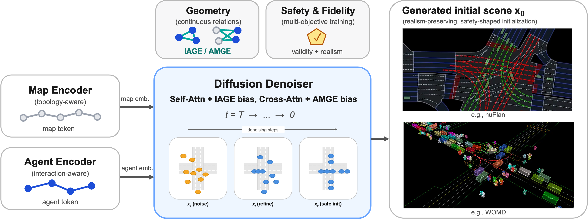
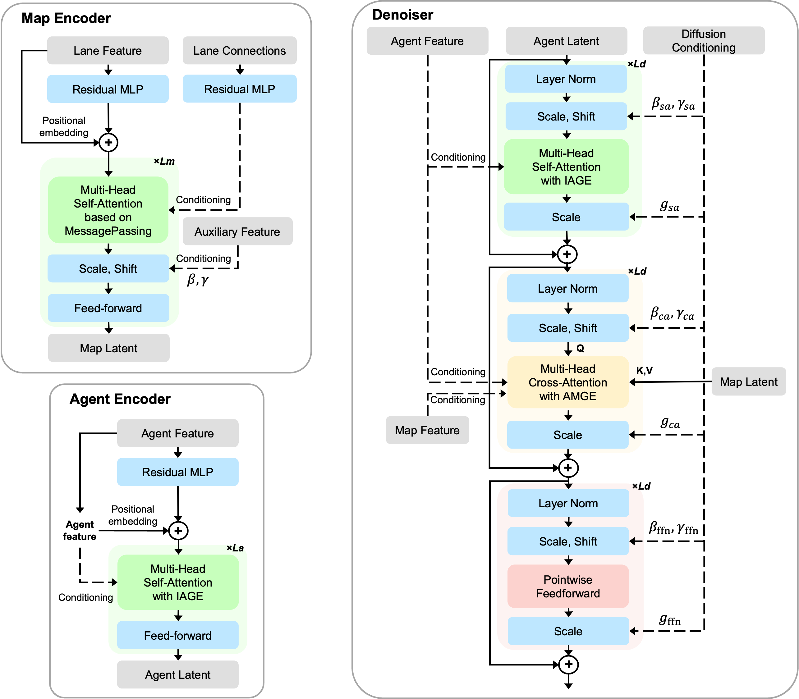

HD-map-conditioned traffic scene initialization
Safety- and Fidelity-Regularized Diffusion for HD-Map-Conditioned Traffic Scene Initialization
NAVER LABS, Republic of Korea · Manuscript under review at IEEE T-IV
Compared with diffusion-only SFiD, the combined losses improve geometric validity without sampling-time guidance while retaining broadly comparable distributional fidelity.
Initial scenes on the same map
02 / INITIALIZATIONSelected qualitative examples: recorded traffic, Scenario Dreamer-L (SD-L), diffusion-only SFiD (D), and Full. Aggregate results: Table IX.
Example 01 · Recorded / SD-L / D / Full.
Open full-size image ↗Pittsburgh is held out for SFiD-Init and is included in SD-L training. D / Full use recorded counts and types before evaluation cropping; SD-L retains its released generation interface.
More qualitative examples
Example 02 · Recorded / SD-L / D / Full.
Open full-size image ↗Example 03 · Recorded / SD-L / D / Full.
Open full-size image ↗Overview of SFiD-Init
03 / METHOD & RESULTSGiven a vectorized HD map and supplied agent counts and types, SFiD-Init samples a joint multi-agent initial state.

SFiD-Init combines geometric relation biases with safety and fidelity regularization during training.
View the network architecture from the paper

Open full-resolution architecture ↗Initialization quality with unguided DDIM-50
Paper · Table VIII| Model | Nearest ↓JSD | Lateral ↓JSD | Angular ↓JSD | Collision ↓% | Off-road ↓% | Fully-valid ↑% |
|---|---|---|---|---|---|---|
| D | 0.0245 ± 0.0017 | 0.0407 ± 0.0013 | 0.0018 ± 0.0002 | 16.62 ± 0.86 | 3.00 ± 0.13 | 29.6 ± 1.2 |
| +Safe | 0.0124 ± 0.0010 | 0.0400 ± 0.0026 | 0.0024 ± 0.0000 | 2.74 ± 0.55 | 3.79 ± 0.07 | 52.0 ± 1.1 |
| Full | 0.0111 ± 0.0022 | 0.0352 ± 0.0026 | 0.0021 ± 0.0007 | 2.57 ± 0.55 | 3.27 ± 0.24 | 55.9 ± 1.1 |
D: diffusion only. +Safe: adds safety regularization. Full: also adds fidelity regularization. Mean ± sample SD across three training seeds. JSD is unscaled; ↓ lower, ↑ higher.
Fully-valid scenes have neither collision nor lane/heading off-road violations.
The added losses have mixed effects on JSD.
Pittsburgh aggregate results · SD-L, D and Full (Table IX)
| Model | Nearest ↓JSD | Lateral ↓JSD | Angular ↓JSD | Collision ↓% | Off-road ↓% | Fully-valid ↑% |
|---|---|---|---|---|---|---|
| SD-L | 0.0471 | 0.0846 | 0.1110 | 24.06 | 32.98 | 19.1 |
| D | 0.0097 ± 0.0005 | 0.0266 ± 0.0032 | 0.0151 ± 0.0028 | 6.12 ± 1.26 | 5.15 ± 1.05 | 61.6 ± 4.4 |
| Full | 0.0097 ± 0.0012 | 0.0277 ± 0.0025 | 0.0159 ± 0.0021 | 5.34 ± 0.55 | 4.37 ± 0.54 | 65.6 ± 1.5 |
D / Full: three training seeds, each averaged over three generation seeds; ± is sample SD across training seeds. SD-L: one released-checkpoint run, no SD reported. Pittsburgh is held out for SFiD-Init only.
Held-out Pittsburgh
04 / GENERALIZATIONSelected initializations on held-out Pittsburgh maps. Full · DDPM-1000 · training seed 0; supplied counts and types are fixed within each map. Each map shows one evaluation sample and two additional generations selected for success and failure; aggregate validity is reported in Table IX.
Display: ±75 m. Dashed evaluation window: ±32 m. Color and symbol keys are shown in each image.
Map 01Generation seeds 1234 / 403959 / 885441
Map 01 · generation seed 1234.
Open full-size image ↗Map 01 · generation seed 403959.
Open full-size image ↗Map 01 · generation seed 885441.
Open full-size image ↗Map 02Generation seeds 1234 / 441002 / 885441
Map 02 · generation seed 1234.
Open full-size image ↗Map 02 · generation seed 441002.
Open full-size image ↗Map 02 · generation seed 885441.
Open full-size image ↗Failure example · Full.
Open full-size image ↗Failure example
Overlaps and off-road placements in a locally crowded scene.
Eight-second rollouts with a shared behavior model
05 / 8-SECOND ROLLOUTReal, SD-L, D, and Full share the map, recorded ego initial state, and Flow-ERD checkpoint. Selected qualitative examples; aggregate results are reported in Table XI.
Selected D / Full rollout.
Recorded initialization vs Full · shared Flow-ERD
Selected Recorded / Full rollout. Recorded uses observed initial states, not future-trajectory replay.
SD-L initialization vs Full · shared Flow-ERD
Selected SD-L / Full rollout.
Explore further
Additional LivingLab demos
52 archived qualitative examples from the earlier project page.
Paper & contact
06 / RESOURCESManuscript under review
Submitted to IEEE Transactions on Intelligent Vehicles.
Download manuscript citation (.bib)
Contact daejung.kim@naverlabs.com
View BibTeX · unpublished manuscript
@unpublished{kim2026sfidinit,
title = {Safety- and Fidelity-Regularized Diffusion for HD-Map-Conditioned Traffic Scene Initialization},
author = {Daejung Kim and Seulbin Hwang and Jinhan Lee},
year = {2026},
note = {Manuscript under review at IEEE Transactions on Intelligent Vehicles}
}